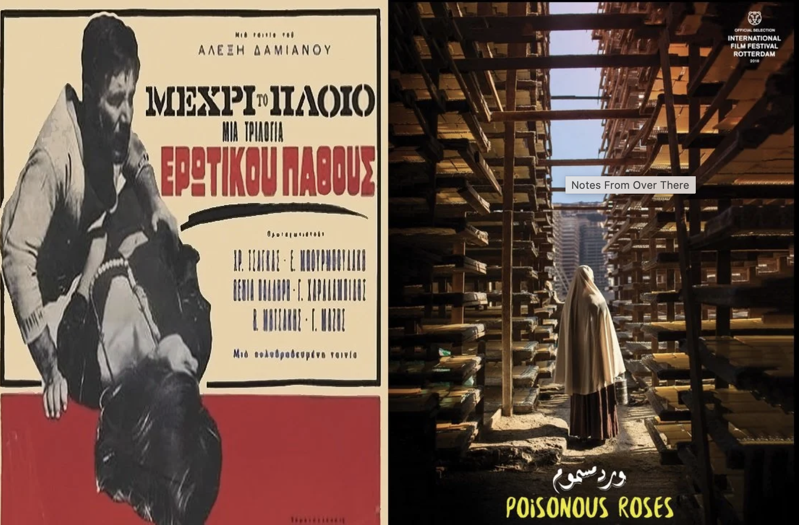
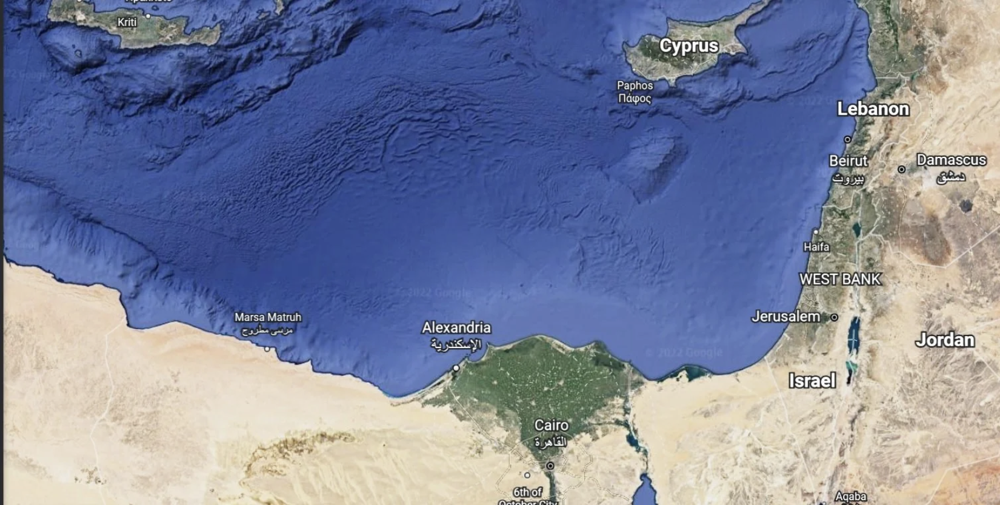

Posters of Alexis Damianos's Until the Ship Sails (1966) and Ahmed Fawzi Saleh's debut feature, Poisonous Roses (2018), respectively
It is a testament to the vitality and importance of art that it is able to capture something of our understanding of the world, in ways that preserve something of that relationship to the world, but also that it tells us something about who we are. Not everything captured and encapsulated by a particular artwork is easy or even palatable to us. Sometimes what art reveals and captures about us, is frightening, shocking or even "ugly". And in doing so, in using particular mediums and forms, that allow for this way of understanding the world, art puts us in confrontation with what we might have overlooked, ignored, or even wilfully dismissed. As we are consumed by the contingencies of our time (late capitalism, climate crisis, rise of right-wing extremism,...etc), and habituated to the dismal reality, it is then art that can "shake" this complacency, this lack of reflection.
Screening Alexis Damianos's Until the Ship Sails (1966) and Ahmed Fawzi Saleh's debut feature, Poisonous Roses (2018), speaks to the moral horrors of this moment. At a time when Europe stands watching as hundreds of migrants sink in the sea, our shared sea, while forbidding assistance and help setting up and paying authoritarian regimes, not just to capture those migrants but in many cases to drag them "back" to where they came from or worse kill them. It is of course ironic considering that the movement across the Mediterranean has been consistently going back and forth at least since the dawn of human settlement in the area.
Europe's moral bankruptcy in claiming it can no longer take anymore refugees becomes even more sinister as it insists on propping dictators and brutal regimes across the region and continent and not only that, but making billions by selling weapons to those same regimes that people are escaping from.
There is a profound resonance between Damianos's and Saleh's work. Both come from countries that had similar histories in their state formation, both were provinces of the Ottoman empire, Greece's independence from the Ottoman empire was combined with the establishment of a foreign dynasty to rule the country, as was the case with Egypt.
In 1805 when an attempt was made to overthrow the Ottoman viceroy in Egypt, a semi-autonomous state from the Ottoman Empire was achieved albeit by foreign dynastic rule that lasted till 1952. Both countries were thrown into the limelight of international politics by virtue of their position with regard Western interests, Greece more directly than Egypt as being part of Europe, but nevertheless both became sites of Cold War conflicts that nearly escalated to full scale regional wars, for example the Greek Civil War (1946-1949) and the Tripartite Aggression (1956).
Damianos's film can be read as a reversal of the Odyssey, where instead of homecoming, there is emigration, instead of hospitality, there is un-hospitality and instead of a sense of belonging rooted in family, tradition and history there is a deep uprootedness that almost threatens the very notions of family, tradition and history. Greece was always at odds with Europe and its modernity, and the post-WWII political mayhem, only aggravated this sense of time, being out of joint, or rather that Greece is no longer a space that one feels as if they are part of the world. Saleh does not owe the same debt to the Odyssey, but he nonetheless also tries to capture the idea of a home that becomes inhospitable and once again, taking to the sea and escaping becomes a major motif, for both films. The questions shift to about what constitutes our belonging to a home, to a certain set of relationships that are anchored in a particular economy, together with complex rituals that organize our belonging to that space. Saleh and Damianos do a remarkable job in showing what happens when material conditions are no longer able to sustain those relationships and those rituals. What happens when we are at loss for meaning? The backdrop is the failure of the nation-state project in Egypt, specifically post-independent state.
Saleh shows us the frightening asymmetry between the majority, the have-nots and the few, that have a lot. The very reality of an authoritarian, neoliberal state, that constantly treats its citizens as an unfortunate liability, that unceremoniously have to slowly be pushed out of the city, out of sight and out of time.
Damianos understands that, the radical break with his time and history, the urge that took thousands of Greeks to "flee" their homeland during the constitutional crisis of the late 1960s, and move to Australia. An uncanny premonition of the military dictatorship yet to come. Damianos almost foretells the fate and destiny of thousands of Greeks who will have to leave their homelands as it is taken over by the military junta. But it's not just about this sense of "homelessness", but also the relationship to time and space. Damianos inadvertently points out to the problems of modernizing Greek society and economy, specifically during the term of Prime Minister Konstantinos Karamanlis (1955-1963), when large scale industrialization and the integration of more rural populations into urban areas started to take place. It's no coincidence that Damianos's protagonist, Antonios (played by Damianos himself), is a low-skilled rural dweller, who tries to undertake different kinds of employment, the almost archaic profession of a blacksmith and the scenes within a small foundry, speak volumes as to the prospects of many Greeks at the time.
No wonder that Antonios ends up leaving the harsh and unforgiving reality of the countryside.
Almost mirroring the same exact problem, is Saleh's protagonist, Saqr, who although he is not necessarily from the countryside, he is from an equally marginalized community that lives in informal settlements all over the capital (those who moved to Cairo over a decade of centralization and modernization since the late 1950s, but were not accommodated by proper urban planning or adequate housing). Saqr also engages in the ancient work of the tanneries, almost unchanged since the late medieval times. The claustrophobic quality of Damianos's foundry, complements Saleh's meandering pathways and allies of the tanneries. Saqr too is at odds with the noxious, stigmatized profession (tanneries produce significant amounts of toxic waste, that is usually recycled and reused by a whole parallel chemical industry). Very much like Antonios, Saqr wants to flee, but unlike the Greeks who immigrated to Australia, Saqr being an Egyptian, brown, Arab, Muslim, single, and the list goes on, is soon apprehended and returned to the very home he wants to escape from.

A Google satellite image of the north coast of Egypt, showing the port city of Alexandria and the southern coast of the island of Crete. The north coast is a route through which a lot of illegal immigrants (whether by Egyptians or other refugees and asylum seekers) cross over to Greece or Italy mainly
One pauses at the very different fates that await our protagonists. Especially when one finds out that, for example, the Greek community in Australia, is one of the biggest Greek communities in the world. Numbering more than quarter of a million. Compared to the number of Egyptians who have immigrated to Australia (34,000 as per the Australian census of 2006), a stark difference appears.
No one today talks about the "barbarians at the gate" and how the Greeks were threatening the safety, security and civilization of Australia. Australia did not set camps on remote islands to detain and torture the Greek immigrants. That is the reserve of brown people. Who must be punished, in the most severe and dehumanizing way possible to deter them from ever thinking they have the right to emigrate. Back then in the 1960s, Australia was in need of workers and was in need of immigrants, and so the Australian resettlement program (aptly named, "Populate or Perish") was established, but even when there were no more need for immigrants, Australia still received more immigrants from Greece, that naturally were treated differently than their brown counterparts. Immigrants are not created equally.
Yet, what might be deeply offensive to our contemporary sensibilities, in both films, is the way that Saleh and Damianos highlight the role of women in that sense of homelessness or the treachery of the home. Damianos more so than Saleh, invoking the rather typical three female archetypes, the Virgin, the (Sacred) Whore and the Devoted but Undesirable Wife. Damianos's feminist politics would be completely at odds with today's feminists. One can defend Damianos in arguing that he tried to show how an extremely patriarchal society flattens and reduces the role and possibilities of women (as mere caretakers who mostly cause trouble for men, by the very fact that channeling and moderating male sexuality is a woman's problem).
Likewise with Saleh, who also used classic sibling fixation to show the limited ways in which women are able to develop some sense of psychological and emotional autonomy in choosing their partners. Saleh, like Damianos, reveals the immense pressure a patriarchal society puts on women, in not just being caretakers, but even providing economic and financial support for the men. Koki, the female protagonist and Saqr's sister, navigates the morally crushing weight of being forced to work and support her family, by anchoring her sense of home via her relationship to Saqr. Her emotional and material investment in that relationship overrides everything else. But, very much like Damianos's characters, without any real resolution. Koki, like her Greek female counterpart, realizes she's anyway alone, with or without Saqr.
And their stories of success pepper news and media, both home and abroad. It is the stories of someone like Saqr or Antonios that rarely see the light. And they are stories that show the hypocrisy of the system, that on one hand doesn't mind profiting from dictators and doing business as usual, and on the other would condemn in the strongest possible way, people who try to escape the horrors of living under such conditions.
In a rare moment of synchronicity, literally occurring at the same time, two films show, not just the similarities of the human condition, but also the similarities of the human desires and aspirations. It is through telling the stories which are not usually told, that an inadvertent truth emerges: the journey home cuts across borders, time and even death. It is the most human of all things, and it is through the telling of those stories, through the films of Damianos and Saleh, that it becomes possible to recognize what is human, and in the empathetic act of recognition, embrace it.